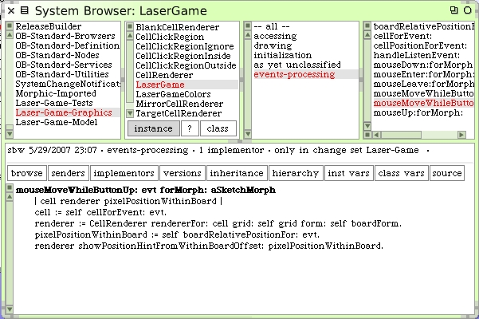
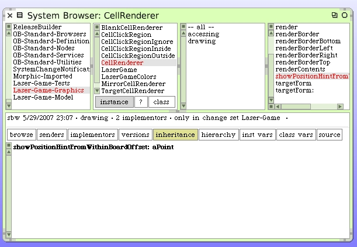
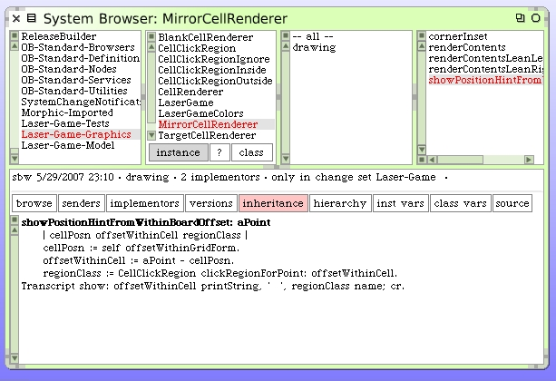
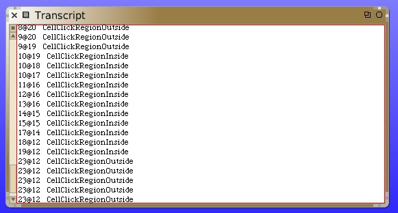

Detecting Mirror Cell Click Regions
Back to work. Where we last left off we had just detected when a mouse was over cells on the game board. Let's do some more work with the mouse-over code.
That #showPositionHintFromWithinBoardOffset: hasn't been written yet. It would be useful for the user if we could draw a "hint" about what can happen when the user clicks over various positions. The "hint" will eventually be visual.
Note that we're using polymorphism here. The message will be sent to every cell renderer. Individual renderers can decide what to do when they receive the message. The Mirror Cells, the renderers actually, are the only ones we expect to care about this message for now.
We should implement this on the CellRenderer superclass and then let any interested subclasses apply code as needed.
Here's what the Mirror Cell Renderer will do with this message.
For the moment, let's log on the Transcript two things each time we get one of these events/messages. Log the relative position within the cell itself and show which click-region claims the point. Make sure you have a Transcript window and our LaserGame morph open and try this out. Hover the mouse around several cells and carefully move within the cell to see the regions respond.
This looks promising.